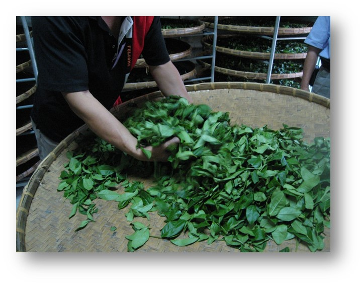
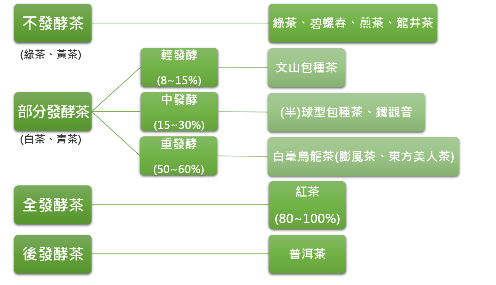
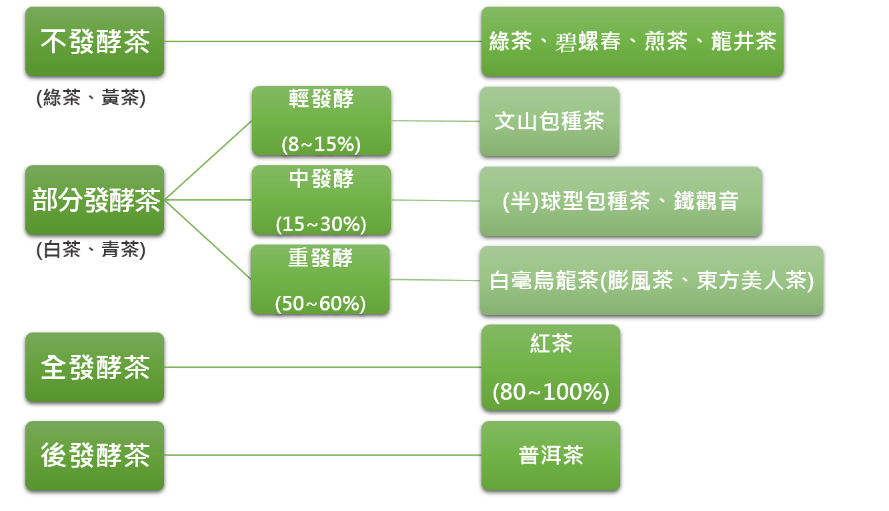

茶葉小教室
製茶流程

●剛採回的芽葉
->水分含量高(75至80%)
->細胞呈飽水狀態
->鮮活膨硬
●萎凋
->物理萎凋
->水份消散
->硬度、重量、體積減少
->具彈性，葉質柔軟
->色澤暗綠

攪拌的意義及目的●使葉緣細胞破損產生物理及化學變化，為部分發酵茶之重要製程。
●隨攪拌次數增加逐漸加重力度及增長時間，嫩採動作宜輕，老採宜稍重。
●適度攪拌可使葉梗中的液體擴散至葉面，即俗稱之「走水」(水分重新分佈)。
●初時攪拌過重造成生葉容易受傷，茶菁產生「積水」，使外觀色澤暗黑，水色黃且滋味苦澀。
●攪拌不足則香氣不揚，容易產生臭菁味。
●萎凋及攪拌的過程
->三分紅、七分綠
->葉脈色淡、莖部走水消散、葉片柔軟，悅鼻芳香
炒菁的意義與目的
●高溫
->急速破壞植物體中存在的酵素活性
->停止發酵
->停止其他生化反應
●使品質趨於穩定
->將發酵所產生的香、滋味及水色趨於穩定
●減少水分含量
●生葉組織軟化
●去除菁味
●利於揉捻作業
●高溫
->急速破壞植物體中存在的酵素活性
->停止發酵
->停止其他生化反應
●使品質趨於穩定
->將發酵所產生的香、滋味及水色趨於穩定
●減少水分含量
●生葉組織軟化
●去除菁味
●利於揉捻作業
揉捻的意義與目的
●運用機械力量
->使茶葉轉動相互摩擦
->茶芽部分組織細胞破壞
->汁液流出黏附在芽葉表面
->乾燥凝固後，便於沖泡溶出
●整形作用
->使茶葉捲曲成條形
->團揉成球型或半球形
->外形美觀
->減少成品體積，便於包裝，運輸及儲藏
●揉捻不足時，茶葉形狀粗大，水色滋味淡薄。
●運用機械力量
->使茶葉轉動相互摩擦
->茶芽部分組織細胞破壞
->汁液流出黏附在芽葉表面
->乾燥凝固後，便於沖泡溶出
●整形作用
->使茶葉捲曲成條形
->團揉成球型或半球形
->外形美觀
->減少成品體積，便於包裝，運輸及儲藏
●揉捻不足時，茶葉形狀粗大，水色滋味淡薄。
乾燥的意義與目的
●溫熱風處理
->破壞殘留茶葉中酵素
->停止發酵作用及其他生化反應
●品質固定在理想狀態
●化學成分變化
->改善茶葉香氣與滋味
●含水量
->下降到3至4%
●外觀
->葉身收縮成條索或半球形、球形緊結，便於長期貯藏
●溫熱風處理
->破壞殘留茶葉中酵素
->停止發酵作用及其他生化反應
●品質固定在理想狀態
●化學成分變化
->改善茶葉香氣與滋味
●含水量
->下降到3至4%
●外觀
->葉身收縮成條索或半球形、球形緊結，便於長期貯藏
茶葉發酵程度區分

茶葉加工基本流程
●萎凋
->物理萎凋：減少水分，增加滲透性，以利發酵
->化學萎凋：蛋白質水解、胺基酸增加，可溶性糖增加，兒茶素氧化
，咖啡因增加，酵素活性增加，不飽和脂肪酸氧化裂解，香氣形成
●攪拌
->破壞細胞壁，增加滲透性，促進發酵，水份再分佈
●靜置
->水分再分佈減少，緩慢發酵，香氣形成
●殺菁
->停止發酵，減少水分，去菁
●揉捻
->成形，易沖泡 ->紅茶類，發酵激烈開始
●乾燥
->固定，去菁
茶樹的一生

種子期Seed Stage
自開花至果實成熟，種子期約一年。It takes 1 year for a seed to mature after blossom.
幼苗期Sprout Stage
由種子萌發至真葉展開三至五片，一般約1至2年。It takes 1 to 2 years for a sprout to grow to an open leaf plant with 3 to 5 leaves.

幼年期Young Plant Stage
又稱「幼木期」，一般約3至5年。Also called “Young Wood Age,” lasts about 3 to 5 years.
成年期Adulthood
又稱「成木期」，一般約為20至30年。Also called “Mature Plant Stage,”and lasts 20 to 30 years.

衰老期Old Age
直到茶樹株死亡為止。一般經濟栽培年線約30至50年。This stage lasts from adulthood to when the plant dies. It usually takes 30 to 50 years for a plant to die.